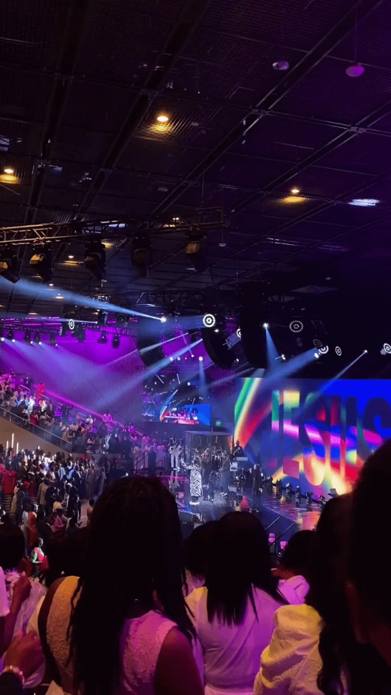

A Place For You
Welcome to RCN Warri
Raising Sons of Order; Men and Women – Intercessors, Prophets, Evangelists and Teachers. We believe that in the years to come, people from all nations of the world will come to RCN to experience the true God as well as get in tune with accurate apostolic patterns that they can replicate in their different nations.
“Striving towards the rebirth of Apostolic Christianity”
Apostle Arome Osayi — The Set Man, Remnant Christian Network
Winepress Prayer Altar
The Place of Consecration and Fire
Winepress is our consecrated furnace of persistent prayer, intercession and spiritual labour. Here burdens are birthed, strongholds are dislodged, and the presence of God is hosted perpetually.

Warri Altar
Join the Fire Watch
Apostolic Foundations
Raise. Restore. Revive. Renew.
RAISE
Raising spiritual giants and disciples of holy discipline.
RESTORE
Recovering ancient landmarks and accurate biblical blueprints.
REVIVE
Igniting perpetual fire on personal and congregational altars.
RENEW
Transforming minds through sound doctrine and the Holy Ghost.
Join Us
Weekly Services
Sunday • 8:00 AM
Celebration & Impartation
Apostolic worship, revelation of God's Word and ministry by the Spirit.
Tuesday • 5:00 PM
Bible Study & Doctrine
Precept-upon-precept teaching rooting your walk in truth.
Friday • 5:30 PM
Miracle & Prophetic Night
Prayer watches, prophetic declarations, healing and deliverance.
Testimonies
God has been so good to me…
Partner With Us
Build the Sanctuary
This ministry is saddled with a huge task to secure a land and build a befitting sanctuary for worship and prayers to our God. We desire volunteered time and skill to fit the needs that arise in-house and commitment of financial resources on periodic basis as each partner is able.